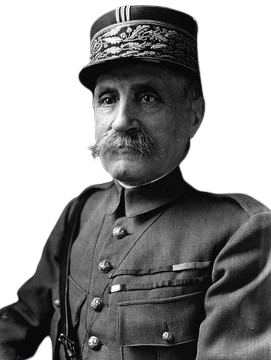

Woodrow Wilson
Presidente dos EUA

Gavrilo Princip
Estudante sérvio

Francisco Ferdinando
Arquiduque da Áustria

Georges Clemenceau
Primeiro-ministro francês

Ferdinand Foch
Marechal francês

Jorge V
Rei da Grã-Bretanha

Kaiser Guilherme II
Imperador da Alemanha

Czar Nicolau II
Último czar da Rússia

Vladimir Lênin
Líder da Revolução Russa

Alvin York
Capturou mais de 130 soldados

Manfred von Richthofen
Piloto de caça alemão

John J. Pershing
General americano